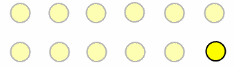

How to Watch a Movie
Step One: Evolve an optic nerve that "refreshes" at a rate of about 13 to 30 hertz in a normal active state. That's 13 to 30 cycles per second. Fortunately, that bit has already been taken care of over the past several million years. You have one of them in your head right now.
Step Two: Project a series of still images captured in sequence at a rate at least twice that of your optic nerve's ability to respond. Let's say 24 images, or frames, per second.
Step Three: Don't talk during the movie. That's super annoying.
Okay, that last part is optional (though it is super annoying), but here's the point: Cinema is built on a lie. It is not, in fact, a "motion" picture. It is, at a minimum, 24 still images flying past your retinas every second. Your brain interprets those dozens of photographs per second as movement, but it's actually just the illusion of movement, a trick of the mind known as beta movement: the neurological phenomenon that interprets two stimuli shown in quick succession as the movement of a single object.

An example of beta movement.
Because all of this happens so fast, faster than our optic nerves and synaptic responses can perceive, the mechanics are invisible. There may be 24 individual photographs flashing before our eyes every second, but all we see is one continuous moving picture. It's a trick. An illusion.
The same applies to cinematic language. The way cinema communicates is the product of many different tools and techniques, from production design to narrative structure to lighting, camera movement, sound design, performance and editing. But all of these are employed to manipulate the viewer without us ever noticing.
In fact, that's kind of the point.
1.2.1 What is Cinema
Is it the same as a movie or a film Does it include digital video, broadcast content, and streaming media Is it a highbrow term reserved only for European and art house feature films
Technically, the word itself derives from the ancient Greek kinema, meaning movement. Historically, it's a shortened version of the French cinematographe, an invention of two brothers, Auguste and Louis Lumiere, that combined kinema with another Greek root, graphien, meaning to write or record.
Cinema, in that sense, stands at the intersection of art and technology like nothing else. As an art form, it would not exist without the technology required to capture the moving image. But the mere ability to record a moving image would be meaningless without the art required to capture our imagination.
And therein lies the critical difference between cinematic language and every other means of communication. The innovations and complexity of modern written languages have taken more than 5,000 years to develop. Cinematic language has taken just a little more than 100 years to come into its own.
1.2.2 Cinematic Language
Like any language, we can break cinematic language down to its most fundamental elements. Before grammar and syntax can shape meaning by arranging words or phrases in a particular order, the words themselves must be built up from shots.
A shot is one continuous capture of a span of action by a motion picture camera. It could last minutes or less than a second. Basically, a shot is everything that happens within the frame of the camera.
These discrete shots rarely mean much in isolation. We have a word for the syntax that arranges them: Editing. Editing arranges shots into patterns that make up scenes, sequences, and acts to tell a story.
Example: The Story Circle
Dan Harmons Story Circle is a tool for mapping a characters journey through change. Whether in the violent chaos of Kubi or the quiet coming-of-age in Initial D, this structure reveals how characters evolve.
1. You � Establishing the Ordinary World
Kubi: The film opens in a volatile yet eerily ordered court. Nobunaga sits atop a delicate
power structure held together by fear.
Initial D: Takumi lives in quiet monotony, delivering tofu before dawn. His world is
constrained, familiar, and disconnected.
2. Need � Highlighting the Desire or Problem
Kubi: Nobunaga's unchecked ambition has created enemies on all sides.
Initial D: Takumi's need is buried under passivity. The challenge of racing awakens
something dormant.
3. Go � Crossing into the Unfamiliar
Initial D: Takumi agrees to his first official race. This moment thrusts him into a
subculture he never sought.
1.2.3 Form, Content, and the Power of Cinema
The analysis of an art form, even one as dominated by technology as cinema, always runs the risk of killing the source of its beauty. By taking it apart, piece by piece, there's a chance we'll lose sight of the whole. But we do it to understand how the magic trick works. So watch. Learn. And above all: start writing.
1.2.4 Explicit And Implicit Meaning
Cinema builds up meaning through the creative combination of these smaller units, but, also like literature, the whole is � or should be � much more than the sum of its parts. For example, Moby Dick is a novel that explores the nature of obsession, the futility of revenge, and humanity�s essential conflict with nature. However, in the more than 200,000 words that make up that book, few, if any, of them communicate those ideas directly.
In fact, we can distinguish between explicit meaning, that is, the obvious, directly expressed meaning of a work of art, be it a novel, painting, or film, and implicit meaning, the deeper, essential meaning, suggested but not necessarily directly expressed by any one element. Moby Dick is explicitly about a man trying to catch a whale, but as any literature professor will tell you, it was never really about the whale.
That comparison between cinema and literature is not accidental. Both start with the same fundamental element, that is, a story. As we will explore in a later chapter, cinema begins with the written word in the form of a screenplay before a single frame is photographed. And like any literary form, screenplays are built around a narrative structure. Yes, that�s a fancy way of saying story, but it�s more than simply a plot or an explicit sequence of events. A well-conceived narrative structure provides a foundation for that deeper, implicit meaning a filmmaker, or really any storyteller, will explore through their work.
This progression aligns with the internal shifts and external conflicts that build the story�s implicit meaning as each stage draws out deeper aspects of the character's arc and theme. By guiding the protagonist through cycles of conflict, growth, and resolution, screenwriters use the Story Circle to ensure that every beat in the story supports the protagonist�s transformation and aligns with the theme, creating a cohesive, character-driven experience.
Another way to think about that deeper, implicit meaning is as a theme, an idea that unifies every element of the work, gives it coherence and communicates what the work is really about. And really great cinema manages to suggest and express that theme through every shot, scene, and sequence. Every camera angle and camera move, every line of dialogue and sound effect, and every music cue and editing transition will underscore, emphasize, and point to that theme without ever needing to spell it out or make it explicit. An essential part of analyzing cinema is identifying that thematic intent and tracing its presence throughout.
Exercise: Identify the Theme
Every scene in your film should reflect a core theme�a central idea or question that gives meaning to your characters� actions and the story you�re telling. This exercise will help you and your team clarify that theme so it can guide every creative decision you make.
Part 1: Identify the Theme
Start with this prompt as a group: �Our scene is about...� Push past plot. Focus on an idea, not an event.
Some examples: Abandonment, Belonging, Revenge, Transformation, Shame, Forgiveness, Resilience.
Examples from our films:
- Tsukigakirei is about how emotional vulnerability takes courage�and how silence can say more than words.
- 13 Assassins is about sacrificing individual lives to restore collective justice.
- Spirited Away explores how identity can be lost and rebuilt through labor, memory, and care.
Part 2: Show How the Theme Emerges
Once you�ve defined the theme, explain how it plays out in your scene: What decision, conflict, or relationship expresses this theme Is the theme made clear through change, tension, or a moment of realization
In Shoplifters, the moment when the family shares a stolen meal isn�t just bonding�it�s a quiet rejection of society�s definition of legitimacy and love.
In Your Name, the theme of longing is clearest in the moment the characters forget each other. Absence becomes the strongest expression of connection.
Part 3 & 4: Test, Refine, and Align
Is the theme just stated�or is it revealed through action Do all key moments in the scene support or challenge the theme Cut anything that distracts or contradicts it.
Reminder: In Kubi, loyalty is repeatedly performed, betrayed, and redefined�not through dialogue, but through beheadings, shifting alliances, and quiet nods before death. That�s how theme lives in the bones of a scene.
Unless there is no thematic intent or the filmmaker did not take the time to make it a unifying idea. Then, you may have a �bad� movie on your hands. But at least you�re well on your way to understanding why!
So far, this discussion of explicit and implicit meaning, theme, and narrative structure points to a deep kinship between cinema and literature. But cinema has far more tools and techniques at its disposal to communicate meaning, implicit or otherwise. Visual storytelling is a crucial part of a screenplay�s preparation for the screen, where writers must think about how scenes will look and sound rather than how they read on the page.
Setting the Scene with Visual Storytelling
Unlike novels, screenplays rely on what can be seen and heard. Screenwriters must think cinematically�how each moment looks, sounds, and feels�because meaning is built through image and behavior.
Environment
Settings aren�t just places�they reflect emotional states. In Adrift in Tokyo, the city is stripped of glamour. Empty alleys, coin laundromats, and quiet riverbanks externalize the characters� drift through grief, guilt, and stalled adulthood. Tokyo becomes not a backdrop, but a mirror.
Objects and Symbols
Props and repetition create metaphor. In Shoplifters, the act of stealing groceries is more than survival�it�s ritual. Shared food, threadbare clothing, and tight living quarters become symbols of an improvised family, where love operates outside legality. No character explains this; we feel it through what they touch and carry.
Action and Subtext
Characters don�t need to explain what they feel�they show us. In Shoplifters, a child clutches a woman�s hand longer than expected. In Adrift in Tokyo, a man walks one step behind. These small, unspoken actions reveal longing, dependence, and emotional negotiation far more powerfully than dialogue.
However, one distinction should be made between how we think about composition and patterns in cinema and how we think about those concepts in photography or painting. While all of the above employ framing to achieve their effects, photography and painting are limited to what the artist fixed in that frame at the moment of creation. Only cinema adds a distinct dimension to the composition: movement. That includes movement within the frame � as actors and objects move freely, recomposing themselves within the fixed frame of a shot � and the movement of the frame itself, as the filmmaker moves the camera in the setting and around those same actors and objects. This increases the compositional possibilities exponentially for cinema, allowing filmmakers to layer in even more patterns that serve the story and help us connect to their thematic intent.